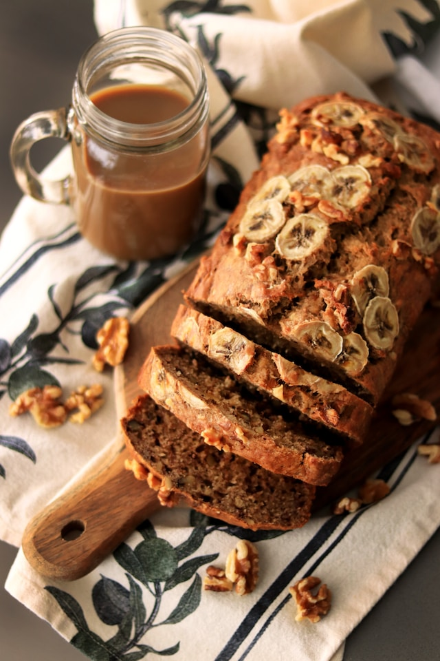

Banana Zucchini Bread

Description
This banana zucchini bread combines two of my favorites: banana walnut bread and zucchini bread.
I like to add dried cranberries for an extra boost of flavor in every bite.
Ingredients
- Eggs: Three eggs add moisture and help hold the batter together.
- Oil: A neutral oil, such as vegetable oil, lends even more moisture.
- Sugars: This banana zucchini bread recipe calls for both brown and white sugars.
- Zucchini and bananas: Of course, you'll need grated zucchini and mashed bananas!
- Vanilla: Vanilla extract enhances the overall flavor of this simple quick bread.
- Flour: All-purpose flour gives the banana zucchini bread structure.
- Cinnamon: Ground cinnamon lends welcome pleasant warmth.
- Leaveners: Baking soda and baking powder act as leaveners, which means they help the bread rise.
- Salt: A pinch of salt enhances the overall flavor, but it won't make your bread taste salty.
- Cranberries: Dried cranberries give the bread bursts of fruity flavor.
- Walnuts: Chopped walnuts add crunch and nutty flavor.
Steps
- Beat the eggs, then beat in the wet ingredients.
- Stir in the dry ingredients, then fold in the cranberries and nuts.
- Pour the batter into prepared pans and bake until a toothpick comes out clean.